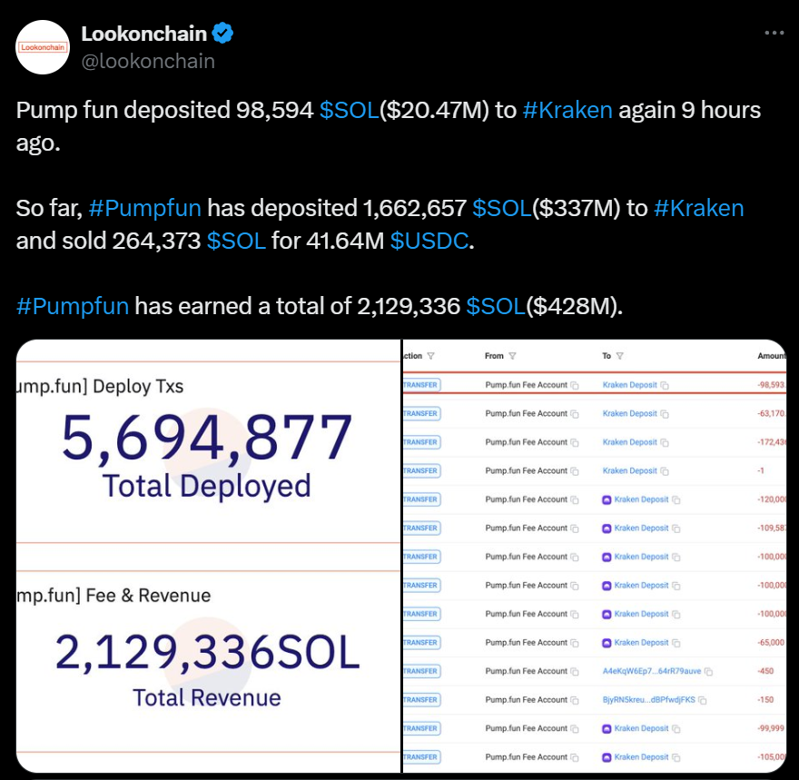

A Cyphomancer Innovation
Cyphofun AI Agent Platform marks a significant milestone in the cryptocurrency ecosystem by introducing the world's first and only uncensored AI Agents. These advanced AI Agents are being seamlessly integrated into the already popular pump.fun Solana token launchpad, creating a revolutionary launchpad experience for crypto projects.
Our platform aims to empower users to enhance their coin launches with versatile and unrestricted AI functionalities, leveraging the trusted pump.fun infrastructure. By doing so, Cyphofun seeks to democratize access to cutting-edge AI tools, enabling every pump.fun user to elevate their token launches with ease and efficiency.
The Cyphofun AI Agent Platform is designed to serve as a launchpad for uncensored AI Agents, such as Root, that integrate directly with the trusted pump.fun Solana token launchpad. This platform is the first of its kind, offering unparalleled flexibility and control to users who wish to augment their token launches with AI-driven functionalities.
A key innovation of our project is the utilization of a Telegram bot interface to manage and launch tokens on pump.fun. This world-first approach ensures that users can effortlessly add an AI Agent to any pump.fun Solana token launch through a familiar and user-friendly platform. The integration requires only a nominal fee, which we anticipate will drive widespread adoption, making AI enhancements a standard feature in pump.fun launches.
Pump.fun is renowned for its robust platform, handling approximately 40,000 new coin launches daily. By building the Cyphofun AI Agent Platform on top of pump.fun, we tap into this vast and active user base, offering a value-added service that enhances the launch process.
The integration is streamlined through a Telegram bot, allowing users to manage their AI Agents effortlessly. This direct integration ensures that adding an AI Agent does not disrupt the existing pump.fun workflow, providing a smooth and efficient user experience.
Users who choose to add an AI Agent to their pump.fun Solana token launches will enjoy a multitude of benefits, including:
With pump.fun handling around 40,000 new token launches daily, the potential market for the Cyphofun AI Agent Platform is immense. This volume translates to a large and active user base eager for tools that can give their projects a competitive edge.
By positioning ourselves as the first platform to offer uncensored AI Agents for pump.fun Solana token launches, we establish a unique market position that can be leveraged for rapid growth and widespread adoption.
The financial model of our platform is designed to create value and sustainability through strategic tokenomics. All fees collected from the creation of Cyphomancer AI Agents will be allocated to buy and burn $42 tokens. This mechanism serves two primary purposes:
The Cyphofun AI Agent Platform is set to revolutionize the way Solana token launches are conducted. By offering the world's first and only uncensored AI Agents integrated directly into pump.fun, we provide users with powerful tools to enhance their projects and engage their communities more effectively.
Our innovative use of a Telegram bot interface ensures minimal effort and maximum impact, while our deflationary token model adds value to the ecosystem.